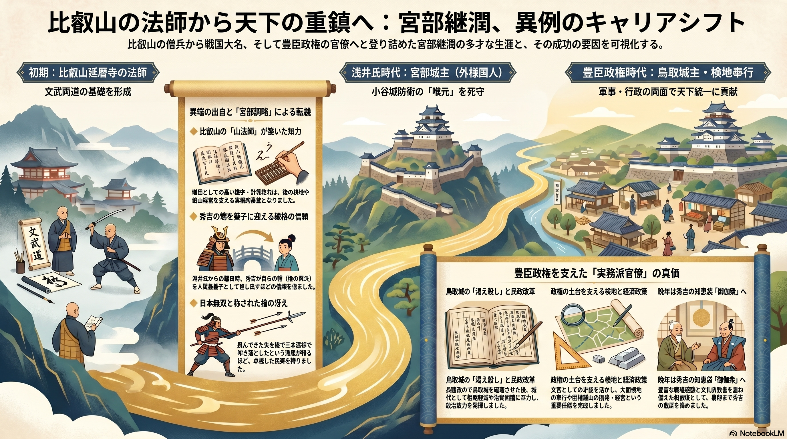

資料3：比叡山の法師から天下の重鎮へ：宮部継潤、異例のキャリアシフト

概要説明
比叡山の僧兵から戦国大名、そして豊臣政権の官僚へと登り詰めた宮部継潤の多才な生涯と、その成功の要因を可視化する。
初期：比叡山延暦寺の法師
文武両道の基礎を形成
浅井氏時代：宮部城主（外様国人）
小谷城防衛の「喉元」を死守
豊臣政権時代：鳥取城主・検地奉行
軍事・行政の両面で天下統一に貢献
異端の出自と「宮部調略」による転機
- ◆ 比叡山の「山法師」が築いた知力 僧侶としての高い識字・計算能力は、後の検地や銀山経営を支える実務的基盤となりました。
- ◆ 秀吉の甥を養子に迎える破格の信頼 浅井氏からの離反時、秀吉が自らの甥（後の秀次）を人質兼養子として差し出すほどの信頼を勝ち得ました。
- ◆ 日本無双と称された槍の冴え 飛んできた矢を槍で三本連続で叩き落としたという逸話が残るほど、卓越した武勇を持ち合わせました。
豊臣政権を支えた「実務派官僚」の真価
鳥取城の「渇え殺し」と民政改革
兵糧攻めで鳥取城を陥落させた後、城代として租税軽減や治安回復に尽力し、統治能力を発揮しました。
政権の土台を支える検地と経済政策
文官としての才能を活かし、太閤検地の奉行や因幡銀山の開発・経営という重要任務を完遂しました。
晩年は秀吉の知恵袋「御伽衆」へ
豊富な戦場経験と文化的教養を兼ね備えた相談役として、最期まで秀吉の側近を務めました。